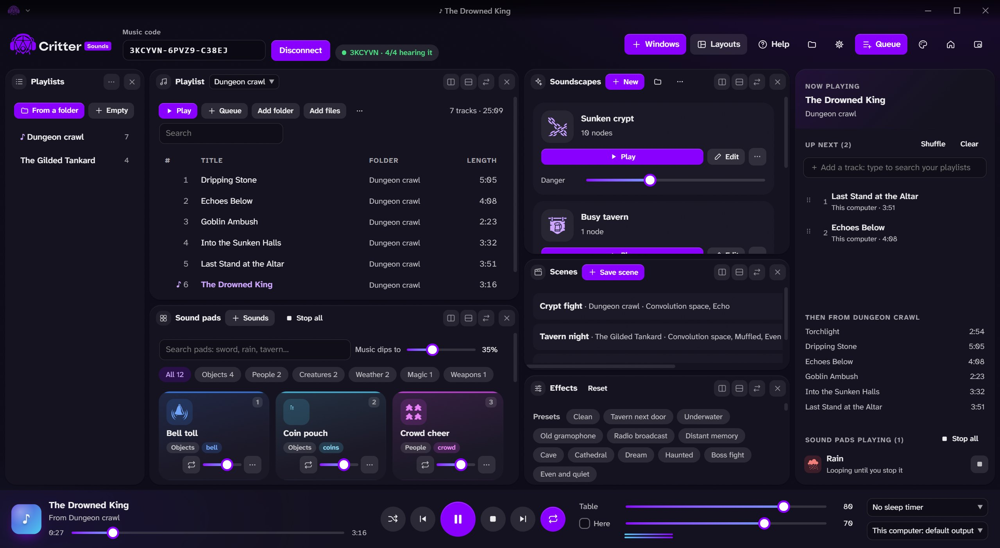
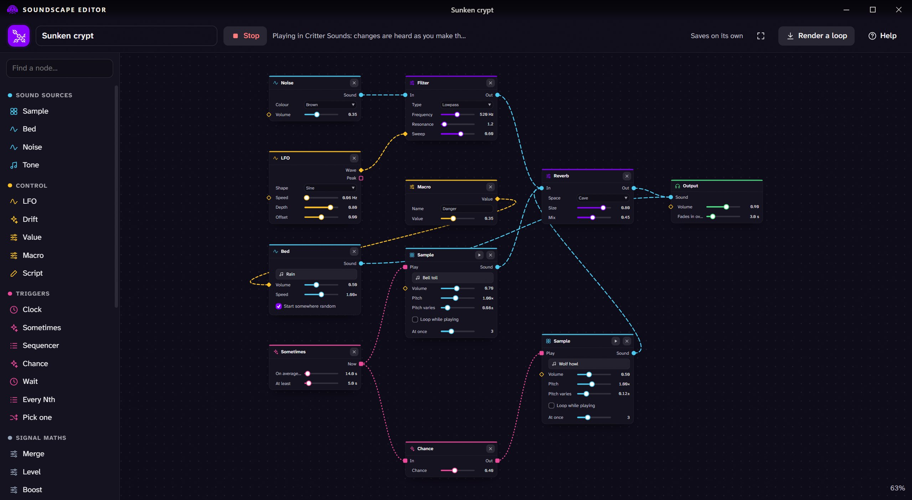
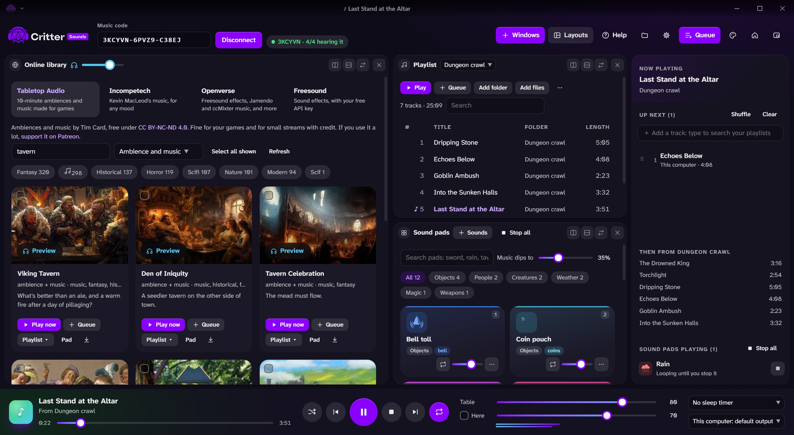

The soundtrack to your game, played live.
Music, sound effects and ambience for your tabletop game, played from your computer to everyone at the table: in Critter VTT, or in a Discord or Fluxer voice channel.
Free and open source. Windows 10 and 11.

Everything the music needs.
It plays from your computer and streams to every player over WebRTC, so there’s nothing to upload and no limit on tracks.
- Playlists from your folders, with a queue, fades and crossfades.
- Sound pads that pick their own icon and tag from the name; keys 1 to 9 play them, and the music dips underneath.
- Scenes that remember a playlist with its effects and volume, and crossfade into it.
- Effects such as Tavern next door, Underwater, Cave and Boss fight, applied on each player’s side.
- Discord and Fluxer bots that play the same mix in a voice channel.
Living backgrounds, built from nodes.
Patch noise, samples, LFOs and random triggers together: rain that comes and goes, a bell that tolls now and then, a wolf in the distance. Every change is heard as you make it.
- A node editor with sound, control and trigger cables, colour-coded.
- Macro sliders like Danger or Intensity show on the soundscape’s tile, to change it while it plays.
- Render a loop up to ten minutes long, crossfaded so it loops without a seam.
- Your own nodes in a few lines of JavaScript.

Free music, credited.
Search free music and sound effects inside the app. Preview it, queue it, make it a pad, or save it to play offline. Every track keeps its credit, and players see it.
- Tabletop Audio with about 520 ten-minute ambiences and pieces of music.
- Incompetech with about 1,440 pieces by Kevin MacLeod.
- Openverse and Freesound for sound effects, each with its license.
- YouTube search, keeping only the sound, for what you may use.

The little things that help.
Your layout, your way
A canvas of windows you split, dock and resize, with ready layouts for playing and preparing.
Session log
Every track, pad and scene is logged with its time, and shows as small notes in Critter VTT’s chat.
Never louder
Effects are loudness-matched, so they never make the music louder. Any player can turn them off.
Voice channels
A bot of your own joins Discord or Fluxer and plays the table’s mix, effects included.
Updates itself
New versions install from inside the app, with what changed.
Guided from the start
A short setup, a quick and a full tour, and a guided first soundscape.
One code, and the table hears it.
In Critter VTT, the lobby owner opens Music and copies the table’s music code. Paste it into Critter Sounds and press Connect. Only an app with the right key can play to your table, and each player sets their own volume.
1. Open your table
Start a lobby in Critter VTT and open Music in the bottom bar.
2. Paste the code
It looks like ABCDEF-KEY12-34567: the lobby, then the key.
3. Play
Tracks, pads and soundscapes reach every player with their credits.
Three apps, one table.
Critter Sounds plays to Critter VTT, the table, and takes its cues from Critter Notes, the GM’s notebook. All three connect through the same Homebase.
The free virtual tabletop: battle maps, 3D dice and sheets, in a browser or on Windows.
Take a look →Music, sound pads and soundscapes, played live to your table, Discord or Fluxer.
You’re herePlan sessions, write the world, draw maps and boards, and send it all to the table.
Take a look →Get Critter Sounds.
For whoever runs the music. Plays from your computer to the table, Discord or Fluxer, and updates itself.
Plays with Critter VTT
The virtual tabletop it plays to: free, in a browser or on Windows.
The installer isn’t code-signed yet, so Windows SmartScreen may warn the first time: choose More info › Run anyway. Every version and what changed is on the Releases page.